GREEN DNA :
My proposal stems from the need to totally change the common vision of the bus stop,
we are used to see all the same types of shelters because companies always produce and manufacture the same shape.
This project aims to present a futuristic vision of the classic platform, trying to integrate different technologies
and sustainable materials in order to create a green environment where people can relax and enjoy every moment while
waiting for the bus. The idea stems from the need to create a space of well-being for all citizens who have to use
public transport to move around the city, trying to create small green environments in the city.The waiting time should
become a pleasant moment where the customer should have all the comfort at his disposal, and should also be an
environment where he can relax, to counteract delays or any stressful moments due to the long wait on his feet.
That's why I have a small outdoor garden where you can sit while you wait to have a closer contact with nature,
in order to escape from the urban jungle
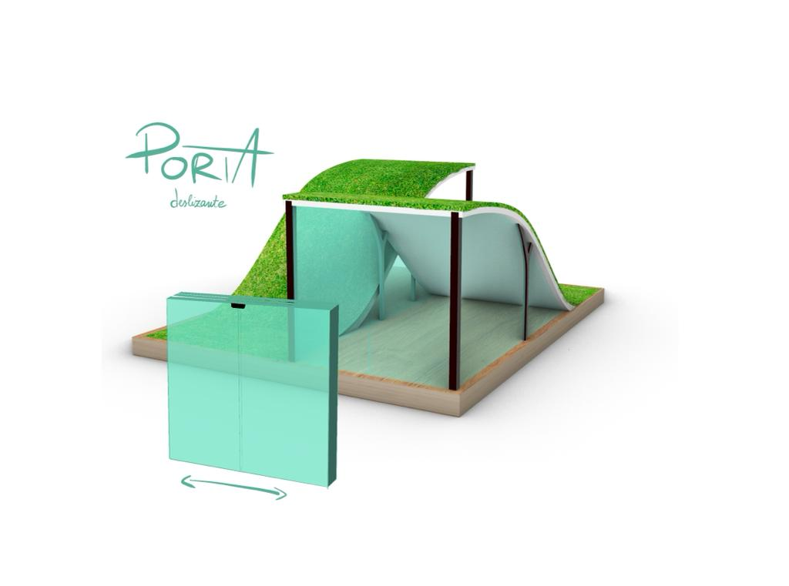
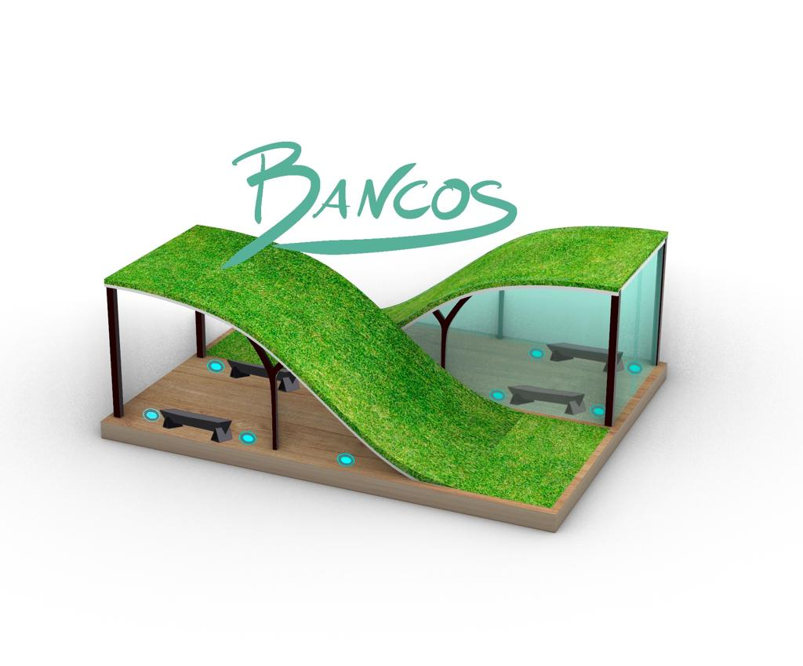
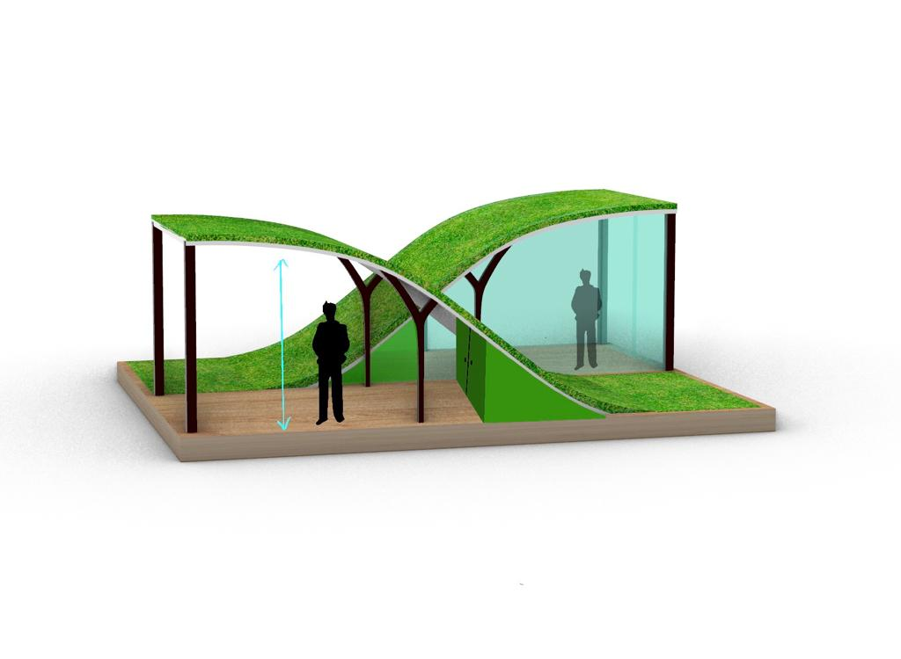
KALU:
The idea for our project came from the need to solve a problem. So we thought about electricity and batteries,
which are indeed limited, or at least are in certain contexts. So, after having informed ourselves, we learnt
about bioluminescence technologies and decided to study the subject. There are many creatures in nature that
emit light autonomously. Of course, the best known case is fireflies, which consume solar energy during the
day and then emit light at night. We met two different types of algae: Noctiluca scintillans: which lit up
through the movement of water Dinoflagellates: which, like Firefly technology, emitted light at night after
sunbathingh DNA modification.
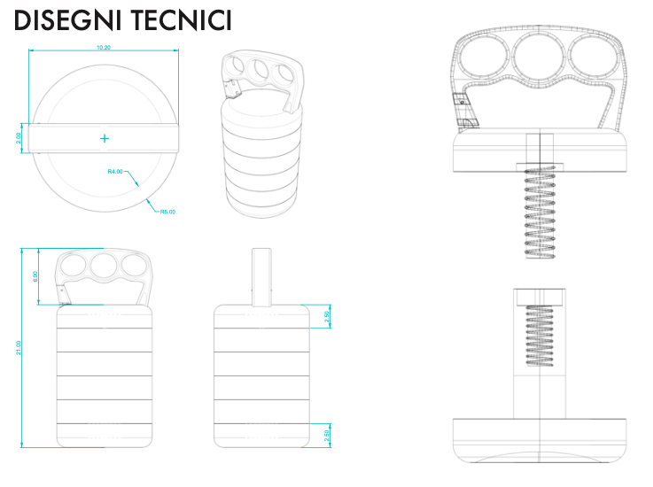
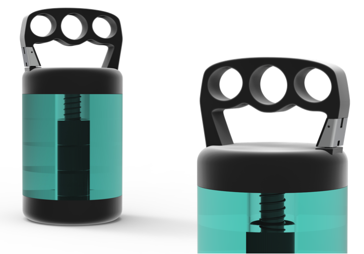
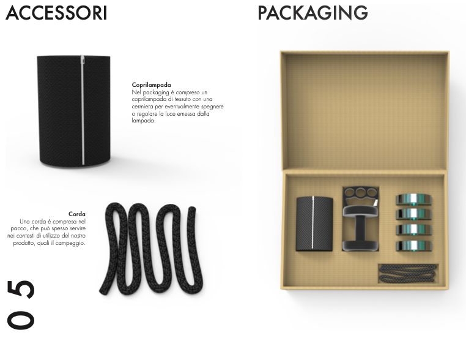
PARFUME BOTTLE:
This exercise consisted of reproducing in 3d a medium difficulty object that we had at home.
we learnt different 3d modelling techniques during the year and were asked to put them into practice
by creating a final presentation of the product.
I recreated the 'Azzaro' perfume bottle trying to make a 3D prototype that was identical to the real object.
Its peculiarity lies in its shape, which is reminiscent of a reloading device for pistol bullets.
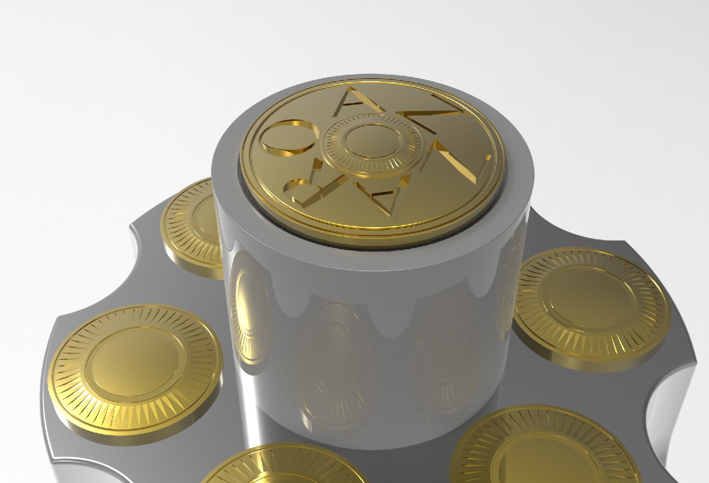
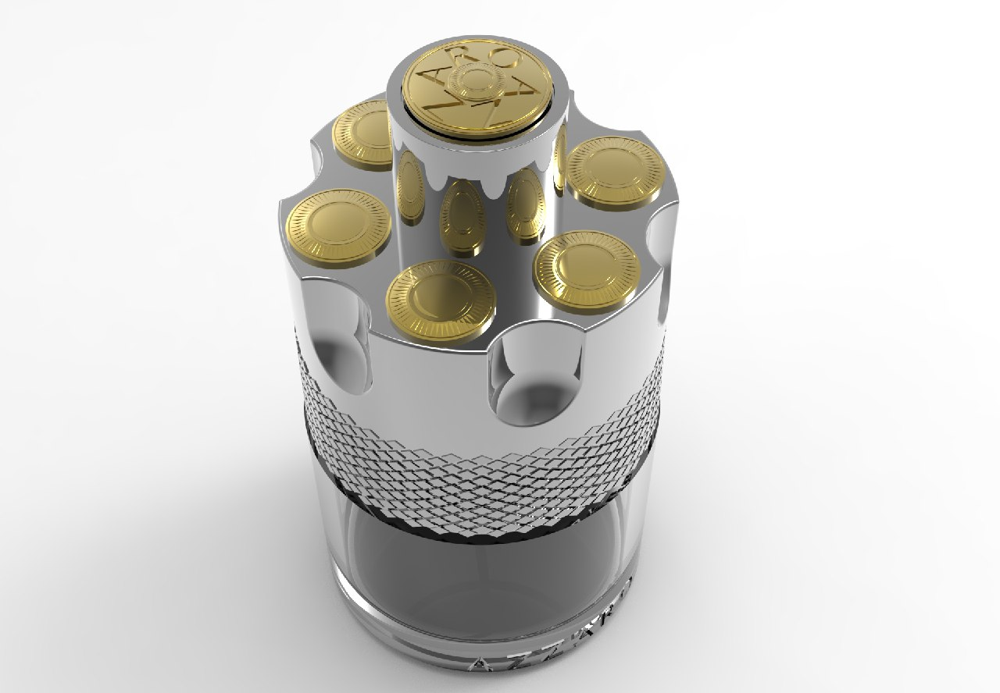
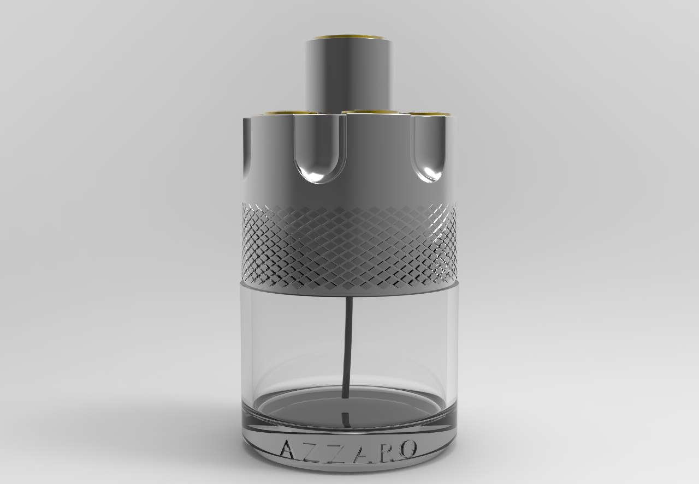
L’ AMOUR PLASTIQUE:
My proposal stems from the need to totally change the common vision of the bus stop,
we are used to see all the same types of shelters because companies always produce and manufacture the same shape.
This project aims to present a futuristic vision of the classic platform, trying to integrate different technologies
and sustainable materials in order to create a green environment where people can relax and enjoy every moment while
waiting for the bus. The idea stems from the need to create a space of well-being for all citizens who have to use
public transport to move around the city, trying to create small green environments in the city.The waiting time should
become a pleasant moment where the customer should have all the comfort at his disposal, and should also be an
environment where he can relax, to counteract delays or any stressful moments due to the long wait on his feet.
That's why I have a small outdoor garden where you can sit while you wait to have a closer contact with nature,
in order to escape from the urban jungle
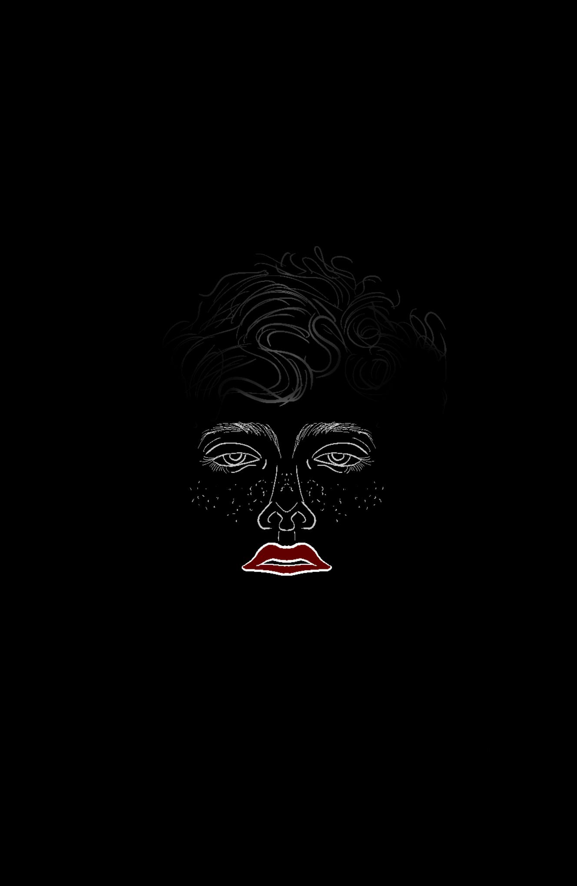
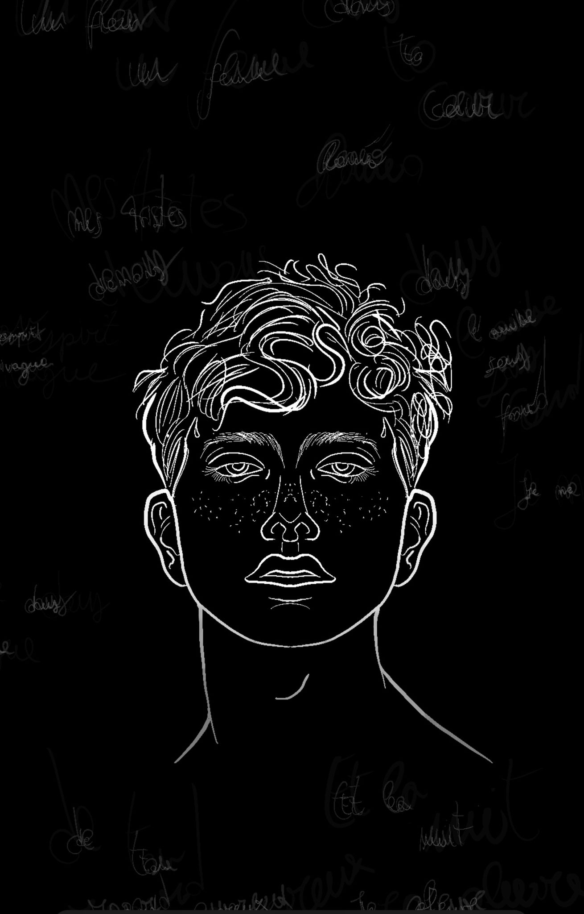
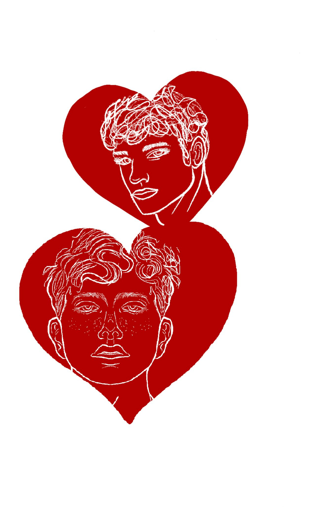
TICKET FOR MOLICEROS:
During the interface development process, we always had in mind the requirements and attributes imposed by the principles
of interaction design, such as Jakob's Heuristics. Using extensive research on user flow and interactive design, as well
as points of inspiration, it was possible to constantly progress the project, as well as increase it. As interaction design
should represent both product and communication design, both fields were always present and taken into account. With the large
size of the screen and its inclination, for those with reduced mobility or short stature, it was imperative that the interface
matched their size and those same needs, thus being able to originate a universal use. The kiosk interface should be a direct
reflection of the brand's communication, so it was worked with the brand's colour palette, implementing it to represent the
different channels of the ria. Although a moliceiro boat trip is a unique experience, and I wanted the experience before
buying the ticket to represent that character, the final result of the user flow can be used in the most varied tourist projects.
It was thus imperative to create an interface that would become in itself an experience for the user, whether local or tourist,
before the actual moliceiro ride. Thus, with the alliance between the user flow of easy navigation and the aesthetic representation
of the brand and the city of Aveiro, we achieved the final product.
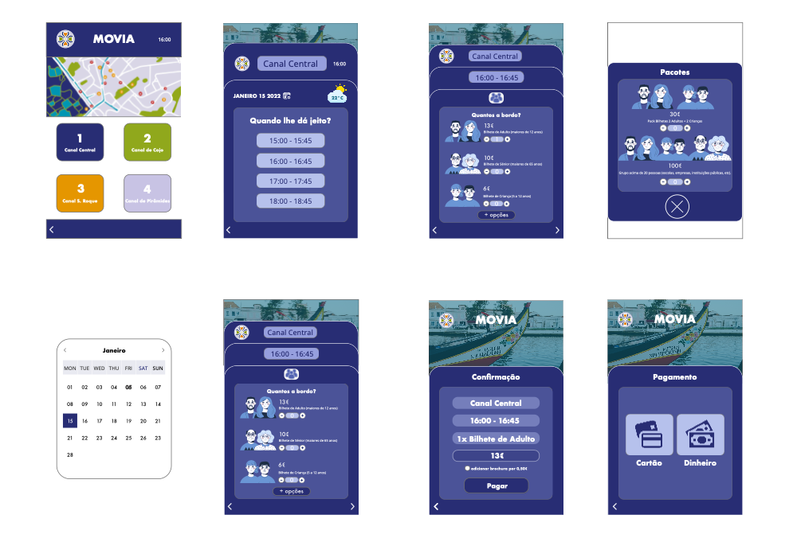
FISHING ROD:
The exercise consisted of looking for a product we had at home and doing a product analysis.
The aim is to get to know the products that surround us and understand how they are made.
At the end a book was needed in which different aspects were covered:
- Analysis sheet
- Disassembly sheeto
- Maintenance and Tableau
- Storyboardu
- Technical drawings
- Affordance
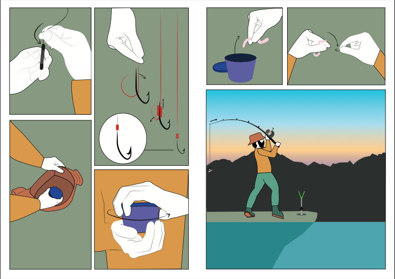
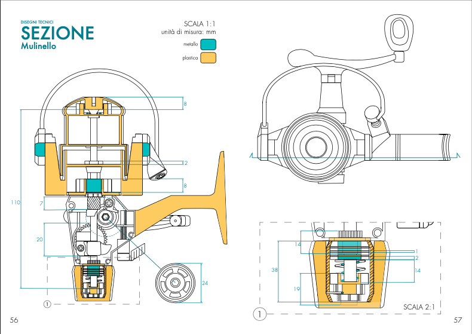
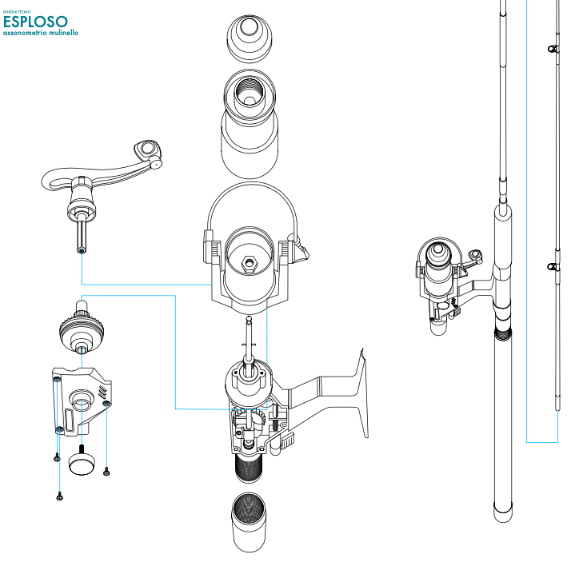